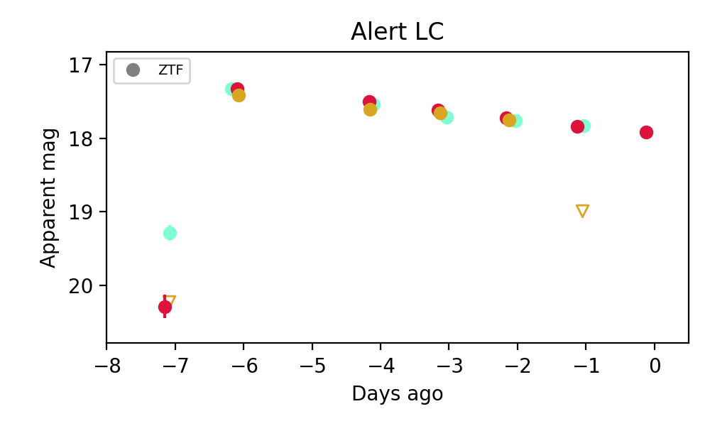
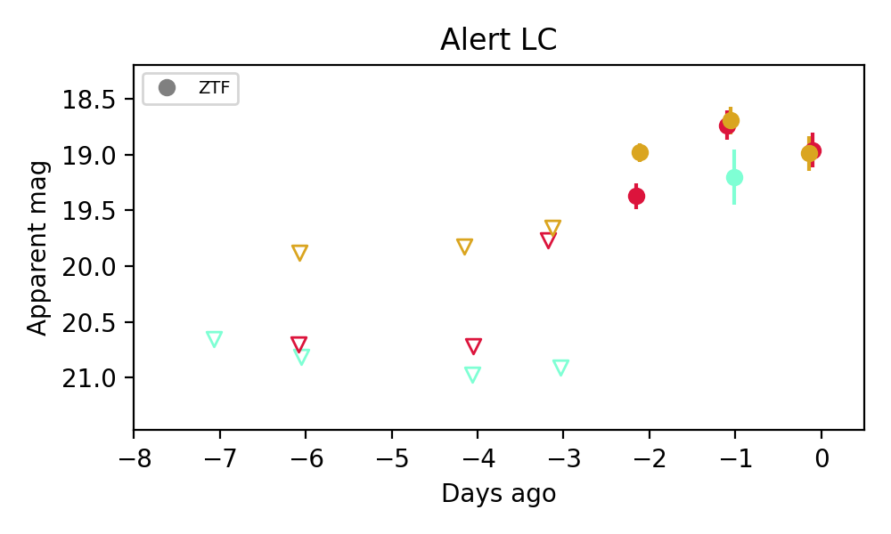

PS1: 0 sources in 3 arcsec LegacySurvey: 0 sources in 3 arcsec

Extinction-corrected gr color: From alerts: -0.4 +/- 0.1 mag Extinction-corrected gi color: From alerts: -1.75 +/- 99 mag Extinction-corrected ri color: From alerts: -1.35 +/- 99 mag
PS1: 1 source in 3 arcsec Closest: d = 2.12 arcsec photoz=0.12+/-0.03 peak abs mag = -24.45 LegacySurvey: 0 sources in 3 arcsec

Extinction-corrected gr color: From alerts: -2.25 +/- 0.28 mag Extinction-corrected gi color: From alerts: -3.68 +/- 0.28 mag Extinction-corrected ri color: From alerts: -1.5 +/- 0.22 mag